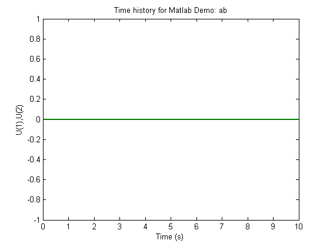
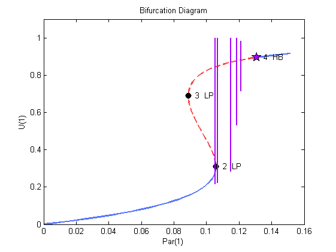
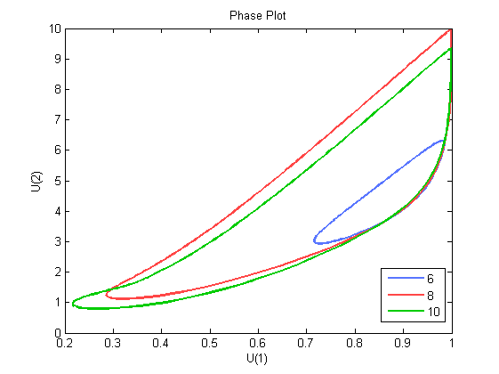
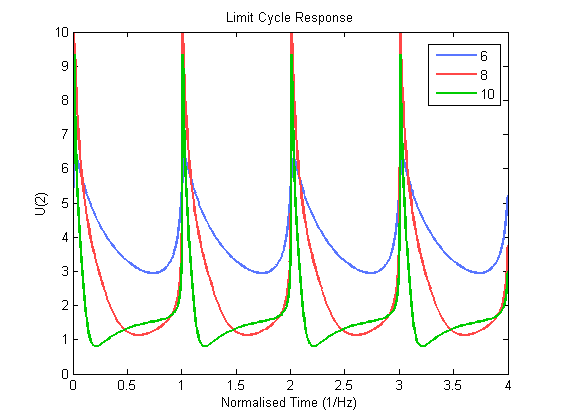
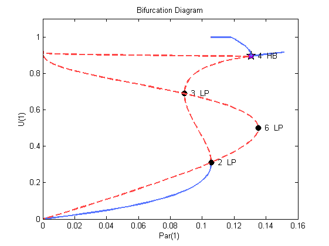

Matlab example with demo 'ab'in DST mode
This demonstration uses the 'ab' example of AUTO to demonstrate the use of Matlab functions with the Dynamical Systems Toolbox in the DST mode.
Contents
- Find the equilibrium of the system
- Set simulation options and initial conditions
- Set the constants and run the stationary solutions
- Run an equilibrium solution
- Check contents written to objects
- Plot stationary solutions
- Compute periodic solutions
- Plot periodic solutions
- Two-parameter continuation, follow locus of lower limit point (Forward)
- Two-parameter continuation, follow locus of lower limit point (Backward)
- Two-parameter continuation, follow locus of hopf point (Backward)
- Plot the locii of the limit points and Hopf bifurcation
Find the equilibrium of the system
The continuation run has to start from an equilibrium state, or a stable limit cycle condition. Most applications will start from an equilibrium condition. This equilibrium is also known as a quasi-steady state, or a trim condition. There are two ways to obtain such an equilibrium:
- Run the simulation for a sufficient period of time, until the derivatives (of the states of interest) are equal to zero. This is the easiest option.
- Use a trim routine to obtain a trim point.
clear all
Choose/guess initial conditions
PAR0=[0,14,2;0,14,2]'; ts=[0,10]'; U0=[0,0]';
Run simulation. The equations need to be defined in a separate function file abode.m to that of the continuation function file, so that we can use the ode45 solver.
options=simset('MaxStep',0.1);
[T,X]=ode45(@(t,U) abode(t,U,ts,PAR0),ts,U0,options);
Plot the results out. We can see that the state derivatives are zero. This is a trivial example seeing that we could have checked this by hand, but the method is applicable for more complex models.
h=plot(T,X); set(h,'LineWidth',2); title('Time history for Matlab Demo: ab'); xlabel('Time (s)'); ylabel('U(1),U(2)'); snapnow; close(gcf);
Set simulation options and initial conditions
We can now use the final states of the simulation as starting conditions for the continuation runs. If the derivatives for these states are not zero, the continuation runs will fail.
Create an auto object. Some of the inherited objects are of handle class, hence the properties in the class act like pointers. If you copy the objects directly, the properties in both objects will change, if the properties in one changes. Hence make sure to create a new object. In our case we are not interested in saving the objects at the end, so we allow the values to change. Go read up on the difference between Value and Handle classes.
a{1}=auto;
Define the function file and intial conditions
a{1}.s.FuncFileName='abmatfunc';
a{1}.s.Par0=PAR0(:,end);
a{1}.s.U0=X(end,:);
a{1}.s.Out0=[];
Print function file to screen.
type(a{1}.s.FuncFileName);
function [f,o,dfdu,dfdp]=abmatfunc(par,u,ijac) % % function file for demo ab % f=[]; % derivative values, same size as Ndim o=[]; % additional outputs, size automatically detected dfdu=[]; % user-defined derivatives for states, this parameter empty when Jac=0 dfdp=[]; % user-defined derivatives for parameters, this parameter empty when Jac=0 u1=u(1); u2=u(2); e=double(exp(u2)); f(1)=-u1 + par(1)*(1-u1)*e; f(2)=-u2 + par(1)*par(2)*(1-u1)*e - par(3)*u2;
Set the constants and run the stationary solutions
We can set the constants from the command line, but for ease of use we can convert the constants file from the original fortran code with the convertchc function, and then we can read the constants in from the m-file.
a{1}.c=cab1(a{1}.c);
Show format of set commands
type('cab1.m');
function c=cab1(c) % cab1 - Constants file converted with function convertchc from c. format % % Created by : ecoetzee % Date : 15-Oct-2010 13:31:49 % set(c,'Ndim',2,'Noutx',200,'Ips',1,'Irs',0,'Ilp',1); set(c,'Icp',[1]); set(c,'Ntst',50,'Ncol',4,'Iad',3,'Isp',1,'Isw',1,'Iplt',0,'Nbc',0,'Nint',0); set(c,'Nmx',100,'Rl0',0,'Rl1',0.15,'A0',0,'A1',100); set(c,'Npr',100,'Mxbf',10,'Iid',2,'Itmx',8,'Itnw',5,'Nwtn',3,'Jac',0); set(c,'Epsl',1e-006,'Epsu',1e-006,'Epss',0.0001); set(c,'Ds',0.01,'Dsmin',0.005,'Dsmax',0.05,'Iads',1); set(c,'Thl',[10,0]); set(c,'Thu',[]); set(c,'Uzr',[]);
Print constants to screen.
a{1}.c
ans =
autoconstants handle
Properties:
Ndim: 2
Noutx: 200
Ips: 1
Irs: 0
Ilp: 1
Icp: 1
Ntst: 50
Ncol: 4
Iad: 3
Isp: 1
Isw: 1
Iplt: 0
Nbc: 0
Nint: 0
Nmx: 100
Rl0: 0
Rl1: 0.1500
A0: 0
A1: 100
Npr: 100
Mxbf: 10
Iid: 2
Itmx: 8
Itnw: 5
Nwtn: 3
Jac: 0
Epsl: 1.0000e-006
Epsu: 1.0000e-006
Epss: 1.0000e-004
Ds: 0.0100
Dsmin: 0.0050
Dsmax: 0.0500
Iads: 1
Thl: [10 0]
Thu: []
Uzr: []
Run an equilibrium solution
Compute stationary solutions by using the runauto method in the auto object
a{1}=runauto(a{1});
Warning: No initial outputs given yet Noutx is larger than 0.
Trying to initalise
--------------- DYNAMICAL SYSTEMS TOOLBOX ---------------------
USER NAME : ECOETZEE
DATE : 26/10/2010 10:03:01
<
BR PT TY LAB PAR(01) L2-NORM U(01) U(02)
1 1 EP 1 0.00000E+00 0.00000E+00 0.00000E+00 0.00000E+00
1 33 LP 2 1.05739E-01 1.48439E+00 3.11023E-01 1.45144E+00
1 70 LP 3 8.89318E-02 3.28824E+00 6.88982E-01 3.21525E+00
1 90 HB 4 1.30900E-01 4.27187E+00 8.95080E-01 4.17704E+00
1 92 EP 5 1.51242E-01 4.36975E+00 9.15589E-01 4.27275E+00
Total Time 0.625E-01
>
Check contents written to objects
In the Fortran version of AUTO the results are written to the fort.7, fort.8 and fort.9 files. This is still an option in the DST mode, but it is not the default.
Print f7 contents to screen.
a{1}.f7
ans =
autof7
Properties:
Ibr: [92x1 double]
Mtot: [92x1 double]
Itp: [92x1 double]
Lab: [92x1 double]
Par: [92x1 double]
L2norm: [92x1 double]
U: [92x2 double]
Out: [92x0 double]
Print f8 contents to screen.
a{1}.f8
ans =
autof8
Properties:
Ibr: [5x1 double]
Mtot: [5x1 double]
Itp: [5x1 double]
Lab: [5x1 double]
Nfpr: [5x1 double]
Isw: [5x1 double]
Ntpl: [5x1 double]
Nar: [5x1 double]
Nrowpr: [5x1 double]
Ntst: [5x1 double]
Ncol: [5x1 double]
Nparx: [5x1 double]
Ifpr: []
T: [5x1 double]
Tm: []
Par: [5x36 double]
Rldot: []
U: [5x2 double]
Ups: []
Udotps: []
Plot stationary solutions
We have seen from the output to the MATLAB command window that there are two limit points and one Hopf bifurcation. We have written a small routine to extract the data from the fort.7 output file. You can try to write your own routine, or you can use the simple routine ploteq. Plot the results out to see what the bifurcation diagram looks like. We plot the continuation paramter PAR(1) against the U(1) parameter. Note the plotting conventions that are used. Solid lines are used for stable equilibrium states, and broken lines for unstable equilibrium states. The limit points (LP) indicate a qualitative change in the stability, while the Hopf bifurcation (HB) indicates a transition from a steady state to a limit cycle.
p=plautobj; set(p,'xEqStr','P(1)','xLab','Par(1)','yEqStr','U(1)','yLab','U(1)','axLim',[0,0.16,0,1.1]); ploteq(p,a); snapnow;

Compute periodic solutions
We want to do the continuation from the Hopf Bifurcation to determine the amplitude and frequency of the limit cycle as we change the parameter.
Copy the information in the first object to the second one. Set constants by cloning constants object. Remember that we are using handle classes and that we do not want them to act like pointers, hence use copy method from the autoconstants object.
a{2}=a{1};
a{2}.c=copy(a{2}.c);
a{2}.c=cab2(a{2}.c);
% Run continuation
a{2}=runauto(a{2});
--------------- DYNAMICAL SYSTEMS TOOLBOX ---------------------
USER NAME : ECOETZEE
DATE : 26/10/2010 10:03:03
<
BR PT TY LAB PAR(01) L2-NORM MAX U(01) MAX U(02) PERIOD
4 30 6 1.21347E-01 4.08243E+00 9.83711E-01 6.30390E+00 2.29801E+00
4 60 7 1.18591E-01 3.76857E+00 9.97665E-01 8.25264E+00 3.66907E+00
4 90 8 1.14794E-01 3.11323E+00 9.99585E-01 9.97959E+00 6.25524E+00
4 120 9 1.06928E-01 2.51769E+00 9.99366E-01 9.62068E+00 9.53437E+00
4 150 10 1.05558E-01 2.14343E+00 9.99139E-01 9.33113E+00 1.60574E+01
4 180 11 1.05507E-01 1.91563E+00 9.99096E-01 9.29961E+00 2.89632E+01
4 210 12 1.05507E-01 1.81363E+00 9.99096E-01 9.29915E+00 4.39597E+01
4 240 13 1.05507E-01 1.76140E+00 9.99094E-01 9.29784E+00 5.89585E+01
4 270 14 1.05507E-01 1.72960E+00 9.99085E-01 9.29901E+00 7.39580E+01
4 300 EP 15 1.05507E-01 1.70820E+00 9.99090E-01 9.29753E+00 8.89577E+01
Total Time 0.369E+02
>
Plot periodic solutions
Add the minimum/maximum of the limit cycle.
plotlceq(p,a); snapnow; close(gcf);
Plot the phase plane of the limit cycles with labels 6, 8 and 10
set(p,'lcLab',[6,8,10],'xEqStr','U(1)','xLab','U(1)','yEqStr','U(2)','yLab','U(2)'); plotlcph(p,a); snapnow; close(gcf);
Plot the response against the normalised period
plotlcpr(p,a); snapnow; close(gcf);
Two-parameter continuation, follow locus of lower limit point (Forward)
Trace out the locus of the lower limit point while stepping in a forward direction. We vary the first and the thrid parameters for the continuation, so restart from label 2 in this first continuation, hence we need to copy the restart file from the first run to the appropriate name. Create new object and set constants.
a{3}=a{1};
a{3}.c=copy(a{3}.c);
a{3}.c=cab3(a{3}.c);
% Run continuation
a{3}=runauto(a{3});
--------------- DYNAMICAL SYSTEMS TOOLBOX ---------------------
USER NAME : ECOETZEE
DATE : 26/10/2010 10:03:42
<
BR PT TY LAB PAR(01) L2-NORM U(01) U(02) PAR(03)
2 27 LP 6 1.35335E-01 2.06131E+00 4.99942E-01 1.99977E+00 2.50000E+00
2 100 EP 7 2.07967E-07 1.82572E+01 9.45153E-01 1.82327E+01 -2.74263E-01
Total Time 0.750E+00
>
Two-parameter continuation, follow locus of lower limit point (Backward)
Trace out the locus of the lower limit point while stepping in a backward direction. We vary the first and the thrid parameters for the continuation, so restart from label 2 in this first continuation, hence we need to copy the restart file from the first run to the appropriate name. Create new object and set constants.
a{4}=a{1};
a{4}.c=copy(a{4}.c);
a{4}.c=cab4(a{4}.c);
% Run continuation
a{4}=runauto(a{4});
--------------- DYNAMICAL SYSTEMS TOOLBOX ---------------------
USER NAME : ECOETZEE
DATE : 26/10/2010 10:03:43
<
BR PT TY LAB PAR(01) L2-NORM U(01) U(02) PAR(03)
2 35 EP 6 -5.93082E-03 9.84264E-01 -1.61237E-02 9.84132E-01 -1.22937E+00
Total Time 0.266E+00
>
Two-parameter continuation, follow locus of hopf point (Backward)
Trace out the locus of the Hopf Bifurcation while stepping in a backward direction. We vary the first and the third parameters for the continuation, so restart from label 4 in this first continuation, hence we need to copy the restart file from the first run to the appropriate name. Create a new object and set constants.
a{5}=a{1};
a{5}.c=copy(a{5}.c);
a{5}.c=cab5(a{5}.c);
% Run continuation
a{5}=runauto(a{5});
--------------- DYNAMICAL SYSTEMS TOOLBOX ---------------------
USER NAME : ECOETZEE
DATE : 26/10/2010 10:03:43
<
BR PT TY LAB PAR(01) L2-NORM U(01) U(02) PAR(03)
4 100 EP 6 8.80937E-05 1.17440E+01 9.14610E-01 1.17084E+01 9.36220E-02
Total Time 0.108E+01
>
Plot the locii of the limit points and Hopf bifurcation
Add the locii of the limit points and hopf bifurcation
p=plautobj; set(p,'xEqStr','P(1)','xLab','Par(1)','yEqStr','U(1)','yLab','U(1)','axLim',[0,0.16,0,1.1]); ploteq(p,a); snapnow; close(gcf);